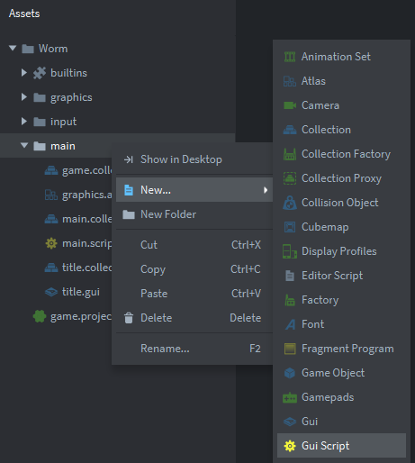
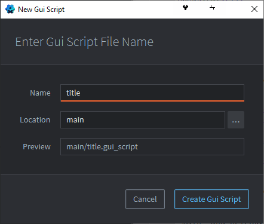

Tutorials for 2D games projects
Worm | Creating the Gui script.
- In the assets panel, right click, 'main' and select, 'New...', 'Gui script'.

- Name the script, 'title' to match the other related components and click, 'Create Gui Script'.

- In the assets panel, double click the file, 'title.gui_script'.
- Change the functions to respond to clicking the buttons on the Gui.
function init(self)
msg.post(".", "acquire_input_focus")
end
function final(self)
msg.post(".", "release_input_focus")
end
function on_input(self, action_id, action)
if action.pressed and gui.pick_node(gui.get_node("1up"), action.x, action.y) then
msg.post("main:/controller", "1up")
elseif action.pressed and gui.pick_node(gui.get_node("2up"), action.x, action.y) then
msg.post("main:/controller", "2up")
end
endWhat does this code do?
When the Gui is shown it attains the input focus. When the Gui is closed it will release the input focus.
When the left mouse button is pressed on top of the node "1up", send a message to the main.collection controller game object script with the string, "1up".
When the left mouse button is pressed on top of the node "2up", send a message to the main.collection controller game object script with the string, "2up".
Remember we need to attach the Gui script to the Gui object for it to work. This is done in a slightly different way to other game objects because the name of the script file is a property of the Gui.
- In the assets panel, in the 'main' folder, double click, 'title.gui'.
- In the properties panel, change the 'Script' property to, '/main/title.gui_script'. You can use the three dots to select this from a list.
- Save the changes by pressing CTRL-S or 'File', 'Save All'.
- Run the program by pressing F5 or choosing, 'Debug', 'Start / Attach' from the menu bar. You should be able to click on either the 1up or 2up button and it will show an empty game screen.

That's the basic interface complete. Now we need to make a game. Stage 3a >
 Craig'n'Dave | Version 1.3
Craig'n'Dave | Version 1.3